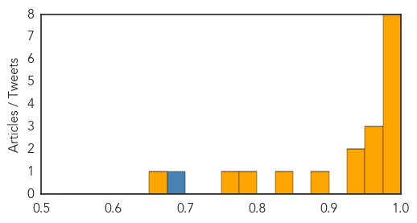

Dengue Fever
30-Day Web Trend
0 alerts, 0 warnings

30-Day Twitter Trend
13 alerts, 0 warnings

Article Locations

Article Confidences
Top Articles:
- 1.000
- Zika Virus 101: One More Mosquito-Borne Disease To Worry About
- 0.999
- Zika virus: Health alerts in South America and Caribbean following fears illness may cause birth deformities
- 0.998
- Belize issues Zik V alert, as first 5 cases confirmed in CARICOM
- 0.996
- Zika virus: Health alerts in South America and Caribbean following fears illness may cause birth deformities
- 0.995
- As rain ceases, experts warn of disease outbreak
- 0.994
- 101 cases of dengue fever confirmed on Hawaii Island
- 0.988
- Brazil Finds Signs of Link between Zika Virus, Birth Defects
- 0.983
- NMSU biology department awarded $400,000 for dengue virus research
- 0.968
- Ramp up effort to tackle dengue Hawaii News, Honolulu, Honolulu News, Sports, Editorial, Features, Travel and Business
- 0.963
- Lawmakers call for CDC, WHO response to dengue outbreak
- 0.959
- Brazil fears mosquito virus causing babies’ skull deformities
- 0.947
- Santa Cruz Is Guanacaste Canton with Most Cases of Dengue
- 0.929
- With dengue, it’s back to the basics of prevention
- 0.882
- Sudan: for first time in four years, UN relief agencies visit areas in Central Darfur
- 0.847
- Dengue grips railway colonies
- 0.788
- Dengue grips railway colonies
- 0.752
- Sudan: Humanitarian Bulletin Issue 46
- 0.669
- Epidemic threat looms in rain-affected areas of Tamil Nadu
Top Tweets:
- 0.855
- Flavivirus news: 72 cases of dengue fever now confirmed on Hawaii Island - KHON2: CNN72 cases o... https://t.co/ywf3g3AKsX pathogenposse
Ebola
30-Day Web Trend
0 alerts, 0 warnings

30-Day Twitter Trend
28 alerts, 2 warnings

Article Locations

Article Confidences

Top Articles:
- 0.999
- Last Known Ebola Case in Guinea Recovers from the Virus
- 0.999
- 2015, Behind the News
- 0.999
- UN Ebola chief says priority now is helping 15,000 survivors
- 0.997
- UN Ebola chief: Priority now is helping 15,000 survivors
- 0.997
- UN Ebola chief says priority now is helping 15 000 survivors
- 0.996
- UN Ebola chief says priority now is helping 15,000 survivors
- 0.996
- UN Ebola chief says priority now is helping 15 000 survivors
- 0.994
- University at heart of Ebola battle badly hit by deaths
- 0.991
- Guinea begins countdown to being Ebola-free
- 0.991
- Soon To Be Declared Ebola Free.
- 0.958
- Building Defences Against Future Ebola Outbreaks
- 0.868
- Chief Medical Officer Expresses MOHS Readiness to improve Status of Emergency Obstetric and Newborn Care in Sierra Leone.
- 0.777
- EU Parliamentary Team told of Ebola effect in Lunsar
- 0.679
- Chief Medical Officer Expresses MOHS Readiness to improve Status of Emergency Obstetric and Newborn Care in Sierra Leone
- 0.663
- Meet the Ugandan Scientist Who Developed the Rapid Ebola Test
- 0.609
- Over 250 midwives honored in Bong
- 0.528
- Texas Children's Hospital isolation unit opens to contain contagious diseases
Top Tweets:
- 0.999
- Matenda a Ebola Akuyembekezeka Kutha Mdziko la GuineaMatenda a Ebola Akuyembekezeka ... - https://t.co/NtM3QeOUap ebola
- 0.995
- ebola anarchist e-juice - https://t.co/yyDrXrPdEE ebola
- 0.995
- Guinea: last known patient of Ebola - https://t.co/W8i8QDIE8J ebola
- 0.995
- Ebola outbreak in West Africa 23 months on: Sierra Leone university students' views on the crisis - https://t.co/IM4oKFPi1t ebola
- 0.993
- Last patient with Ebola recovers in Guinea, now with no cases of the disease - https://t.co/yi5bN50eKs ebola
- 0.993
- Guinea: Last Ebola patient tests negative - https://t.co/TLwlqwHUDf ebola
- 0.992
- Health: Last Ebola Patient Released from Treatment Center - https://t.co/01rZB9Gb6O ebola
- 0.989
- - Ebola outbreak in West Africa “is not completely over”, Navarro - https://t.co/6hj6ra6lyG ebola
- 0.988
- Potential impact of sexual transmission of Ebola virus on the epidemic in West Africa - https://t.co/kCxyMElRao ebola
- 0.986
- Gamma interferon protects mice from Ebola virus - https://t.co/eW1fBUY02L ebola
- 0.985
- Traditional healers change leaf after Ebola - https://t.co/s8h0ssmfKS ebola
- 0.979
- News in the Humanosphere: No known cases of Ebola in Africa - https://t.co/p9JwupOIuw ebola
- 0.979
- Last known Ebola case in Guinea recovers - https://t.co/ukq4op4lmy ebola
- 0.979
- Ebola Vaccine Shows Positive Human Immune Response - https://t.co/olSFLKptLU ebola
- 0.978
- Last Known Ebola Patient Cured In Guinea - https://t.co/J2pfZwlV2E ebola
- 0.975
- Guinea Begins Countdown To Ebola End - https://t.co/EPrem1Pz8h ebola
- 0.974
- Hewlett Foundation Grant Summary | Ebola Epidemic Response - https://t.co/0SNQKmUOOa ebola
- 0.969
- Tallaght hospital in lockdown following Ebola scare - https://t.co/2BsF7TEnLs ebola
- 0.967
- Speaker to discuss Ebola, influenza and future pandemics - https://t.co/7ytn0QturW ebola
- 0.960
- Guinea Begins Countdown To Ebola End - Celebrating Progress Africa https://t.co/eBvDS2vFcL ebola EVD
- 0.950
- Ebola outbreak in West Africa has resulted in more Ebola survivors than ever before: https://t.co/tzHuMxl5zj
- 0.949
- Going home to face Ebola - https://t.co/2eT3JGhrhB ebola
- 0.944
- Ebola: Can't say this often enough. The world owes a huge debt to the health professionals & response workers who battled Ebola. myheroes
- 0.940
- New Ebola Vaccine Safe, Stimulates Strong Immune Response - NDTV https://t.co/qOlJtDlMBb ebola EVD
- 0.940
- New Ebola Vaccine Safe, Stimulates Strong Immune Response - NDTV https://t.co/SJ7rYbRngg ebola EVD
- 0.937
- Sierra Leone: World Bank Provides US126 Million for Post-Ebola Recovery - https://t.co/SZZXevxj97 ebola
- 0.936
- New Ebola Vaccine strengthens Immune Response: Study - https://t.co/69tDGvrJsh ebola
- 0.928
- Studies show Ebola RNA stable in blood, promise for filovirus vaccine - https://t.co/1rMEMuT4gH ebola
- 0.928
- New Ebola vaccine safe, stimulates strong immune response - https://t.co/Wubn9eYxen ebola
- 0.928
- New Ebola vaccine safe, stimulates strong immune response - Zee News https://t.co/qR8UtS75HX ebola EVD
- 0.926
- UN Ebola envoy: Survivors are "priority number one" - https://t.co/93bBkH7z0K ebola
- 0.926
- Prioritising psychosocial support for people affected by Ebola... - https://t.co/KUKG892rba ebola
- 0.924
- Studies show Ebola RNA stable in blood, promise for filovirus vaccine - CIDRAP https://t.co/NXuIF1CI3T ebola EVD
- 0.922
- Queen gives lunch for Ebola doctor - https://t.co/zEJ97ipYDy ebola
- 0.918
- Continue Ebola Survivors' Project, Unicef Urged - https://t.co/ynyan6Jfs0 ebola
- 0.912
- Support for Ebola survivors 'priority', says UN envoy - https://t.co/tMolPyjncv ebola
- 0.907
- Future epidemic trials must cut through red tape, says Ebola researcher - https://t.co/04J67qs1yA ebola
- 0.906
- University at heart of Ebola battle badly hit by deaths - https://t.co/pft84j3Vnw ebola
- 0.900
- French speaker +behavioral scientist +health communicator = perfect candidate for Ebola outbreak response in Guinea https://t.co/4Uqnzx40F6
- 0.890
- Ensuring 15000 survivors of Ebola have support they need is first priority: UN envoy - https://t.co/zhhUxxTpkR ebola
- 0.886
- University at heart of Ebola battle badly hit by deaths - University World News https://t.co/oP566LCHvO ebola EVD
- 0.877
- UN Ebola chief says priority now is helping 15000 survivors - https://t.co/S7dO0vT5W1 ebola
- 0.877
- UN Ebola Chief Says Priority Now Is Helping 15000 Survivors - https://t.co/nXhRBbW3U3 ebola
- 0.873
- RT: @chrislhayes do the syrins have the ebola?!?
- 0.868
- GMod: DarkRP Mod - https://t.co/VgQNOzQlhN ebola
- 0.851
- News about ebola on Twitter - https://t.co/A1UeQWRXgi ebola
- 0.826
- USA Medical Center Trains Serious Infectious Disease Team - https://t.co/KZzu7R0hiN ebola
- 0.814
- The last known Ebola case in Guinea a three week old girl has... Stock Footage Video - https://t.co/Tlq0P5Y4C3 ebola
- 0.808
- UN Ebola Chief Says Priority Now Is Helping 15000 Survivors - ABC News https://t.co/AH5wzUGzj1 ebola EVD
- 0.807
- University of Maryland's Ebola vaccine declared safe and effective - https://t.co/sRL3dOmxKQ ebola
Showing top 50 tweets...